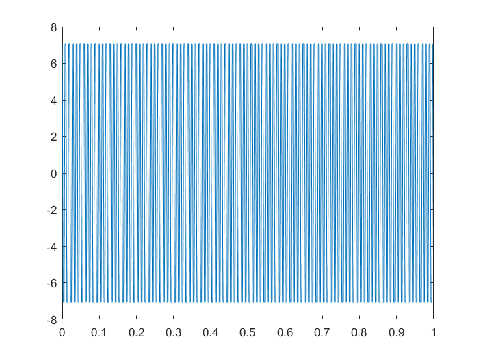
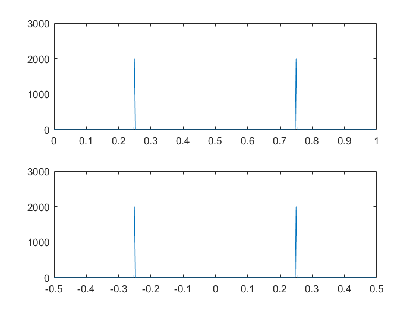
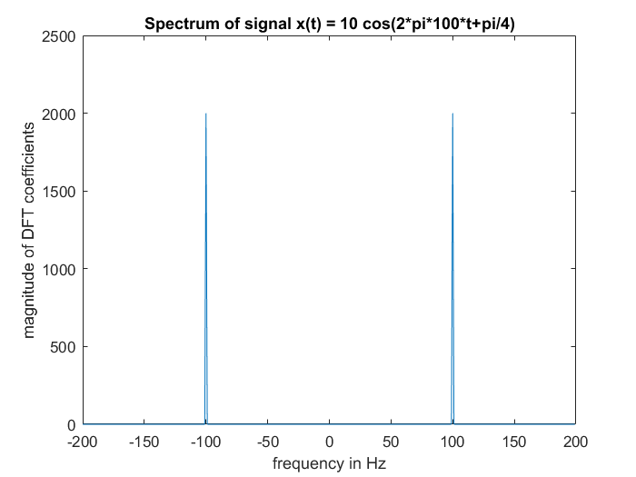
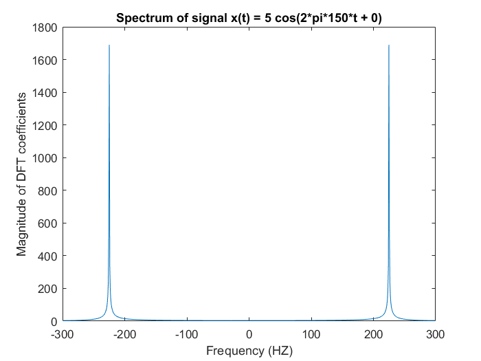

Matt Bachmeier
ECE 203 Lab 05 - The DFT and Spectrum Analysis 3/5/2017
Contents
Section 3.1 (my_idft included)
clear all close all A = 10; f0 = 100; phi = pi/4; fs = 400; Ts = 1/fs; T = 1; N = T*fs; tn = (0:N-1)/fs; x = A*cos(2*pi*f0*Ts*(0:N-1)+phi); figure(1) plot(tn,x) % the frequency of this sampled sinusoid is 100 Hz. It was adequately % sampled at the nyquist rate because fs > 2*f0. There are 4 samples per % cycle (sample/cycle = fs/f0) %function X = mydft(x) %N=length(x); %for k=1:N % X(k) = 0; % for n = 1:N % X(k) = X(k) + x(n)*exp(-j*2*pi*(k-1)/n*(n-1)); % end %end tic; myX = mydft(x); mytime = toc; tic; matX = fft(x); mattime = toc; mytime mattime myX(291) matX(291) % The mattime is quicker than the mytime. This means that the built in % function for computing the dft coeeficients in faster. The numbers seem % to be just slighly off in comparison. %function X = my_idft(x) %N = length(x); %for n = 1:N % X(n) = 0; % for k = 1:N % X(n) = X(n) + x(k)*exp(j*2*pi*(k-1)/N*(n-1)); % end % X(n) = (1/N)*X(n); %end tic; myIX = my_idft(matX); mytimeI = toc; tic; matIX = ifft(matX); mattimeI = toc; mytimeI mattimeI myIX(201) matIX(201) % Similarily, the built in ifft function works quicker than our my_idft % function. But the values from our written fuction are closer to the % values from ifft than the fft was with the written function for that.
mytime =
0.1025
mattime =
2.8412e-04
ans =
1.6824e-12 - 4.4347e-12i
ans =
6.3608e-13 - 3.0497e-12i
mytimeI =
0.0984
mattimeI =
1.8148e-04
ans =
7.0711 - 0.0000i
ans =
7.0711
 Section 3.2
% These statements will plot the coefficients of the spectrum. First from % DFT coefficients over the 0-1 range, then from the -1/2 to 1/2 range. figure(2); X = fft(x); fhata = (0:N-1)/N; subplot(2,1,1); plot(fhata,abs(X)); fhatb = (-N/2:N/2-1)/N; subplot(2,1,2); plot(fhatb,fftshift(abs(X))); % These statments will convert the plots from cycles/sample to % cycles/second (or Hz). They will be plotted to show the DFT coefficients % on the frequency scale. figure(3); fHz = (-N/2:N/2-1)/N*fs; plot(fHz,fftshift(abs(X))); xlabel('frequency in Hz'); ylabel('magnitude of DFT coefficients'); title('Spectrum of signal x(t) = 10 cos(2*pi*100*t+pi/4)'); % The following is the next set up for plotting the spectrum of a % sinusoidal signal. A = 5; f0 = 150; phi = 0; fs = 600; Tx = 1/fs; T = 1.25; N = T*fs; tn = (0:N-1)/fs; x = A*cos(2*pi*f0*Ts*(0:N-1) + phi); % Plots the second sinusoidal signal X = fft(x); fHz = (-N/2:N/2-1)/N*fs; figure(4); plot(fHz, fftshift(abs(X))); xlabel('Frequency (HZ)'); ylabel('Magnitude of DFT coefficients'); title('Spectrum of signal x(t) = 5 cos(2*pi*150*t + 0)'); % The second spectrum plot is not what I expected. There are 4 samples per % cycle but the spectrum is plotting the DFT values at a frequency other % than 150.  